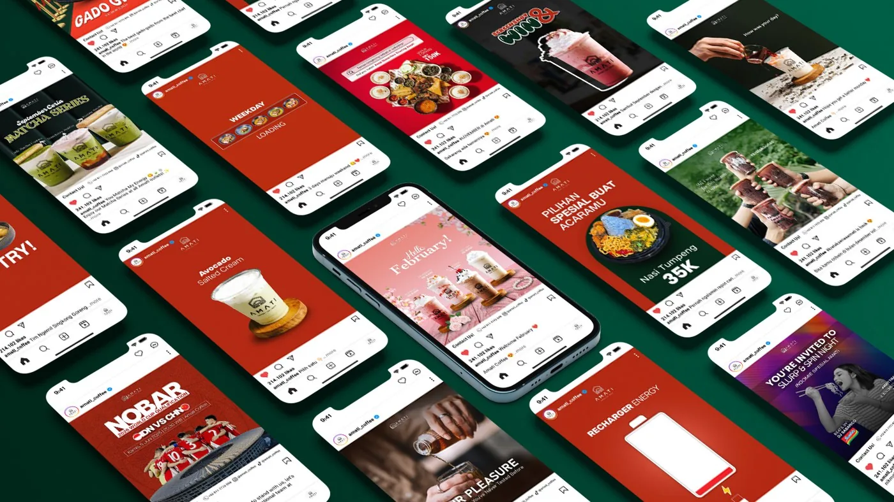
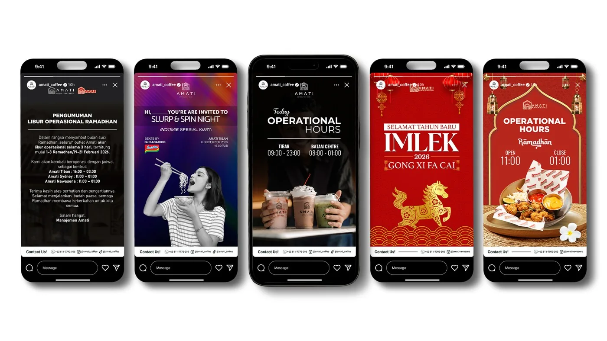
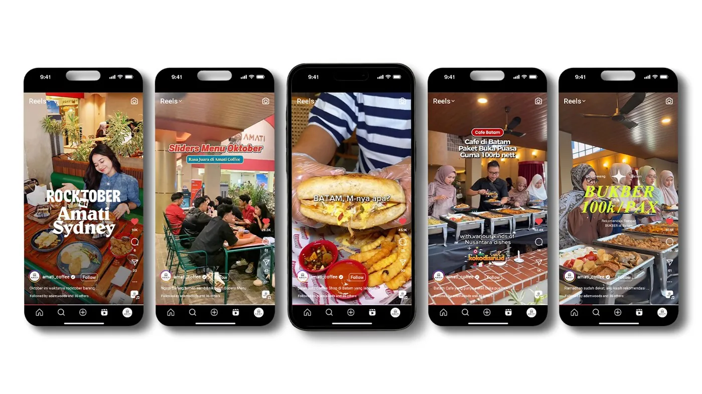
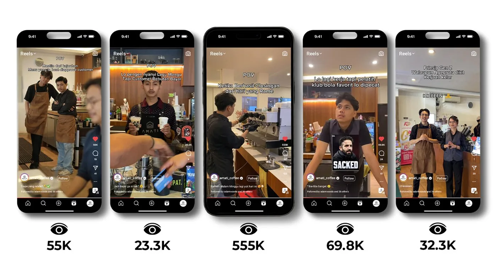
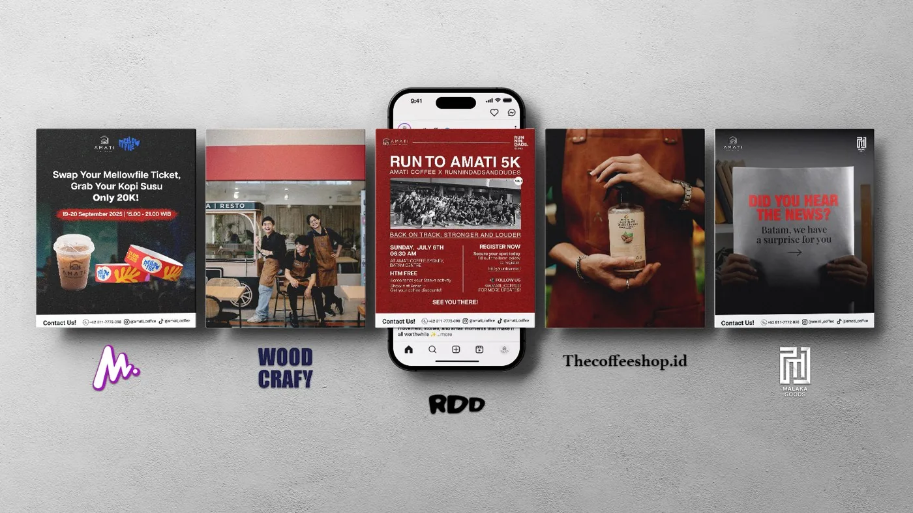

Amati Coffee
Membangun Kehadiran Digital Amati Coffee dari Jarak Jauh dengan Strategi Konten yang Konsisten
Adsbangda membantu Amati Coffee mengembangkan kehadiran digital melalui strategi Social Media Management yang dijalankan secara remote dari Batam. Seluruh proses, mulai dari perencanaan konten, koordinasi produksi, hingga evaluasi performa dilakukan secara kolaboratif bersama tim di lokasi.
Selama kerja sama berlangsung, kami tidak hanya mengelola media sosial, tetapi juga mendukung pengembangan bisnis Amati Coffee melalui strategi konten yang relevan, kolaborasi bersama KOL, serta ide-ide kreatif yang membantu meningkatkan awareness dan engagement brand secara berkelanjutan.
Tentang Proyek
Amati Coffee merupakan coffee shop yang berlokasi di Batam dan menghadirkan berbagai pilihan kopi, minuman, serta makanan dengan konsep yang dekat dengan gaya hidup anak muda.
Meskipun proyek ini dikerjakan secara remote, kami membangun komunikasi yang intens bersama tim Amati Coffee melalui proses briefing, diskusi ide, evaluasi konten, hingga perencanaan campaign secara berkala. Pendekatan kolaboratif ini memastikan setiap konten tetap sesuai dengan karakter brand dan kebutuhan pasar lokal di Batam.
Selain mengelola media sosial, kami juga berkontribusi dalam pengembangan strategi bisnis melalui ide kampanye kreatif, kolaborasi dengan KOL, hingga pengembangan konsep konten yang mampu meningkatkan jangkauan organik dan memperkuat identitas brand.
Dari konten media sosial harian, Instagram Story, kolaborasi KOL, hingga konten yang menembus 554K views — berikut rangkaian strategi konten yang kami jalankan untuk Amati Coffee.
Social Media Management

Kami mengelola seluruh proses produksi konten media sosial Amati Coffee, mulai dari content planning, copywriting, desain visual, editing video, hingga publikasi secara berkala.
Strategi konten difokuskan pada promosi menu, storytelling brand, edukasi ringan, tren media sosial, serta konten hiburan yang relevan dengan target audiens sehingga mampu menjaga engagement sekaligus memperkuat hubungan dengan pelanggan.
Story Content

Selain konten utama, kami juga mengelola Instagram Story harian sebagai media komunikasi yang lebih cepat dengan pelanggan.
Konten story dimanfaatkan untuk menyampaikan informasi operasional, promo, event, hingga aktivitas harian di outlet sehingga akun tetap aktif dan interaktif setiap hari.
KOL Management

Kami mengelola proses kolaborasi bersama berbagai food dan lifestyle creator di Batam, mulai dari pemilihan KOL yang sesuai dengan target audiens, penyusunan brief, koordinasi produksi, hingga evaluasi performa konten.
Pendekatan ini membantu Amati Coffee memperoleh eksposur yang lebih luas sekaligus meningkatkan kepercayaan calon pelanggan melalui promosi yang terasa lebih autentik.
Top Performing Content

Salah satu strategi yang kami terapkan adalah memanfaatkan format video pendek yang mengikuti tren media sosial dengan pendekatan storytelling yang ringan dan mudah dibagikan.
Melalui pendekatan tersebut, beberapa konten berhasil memperoleh performa yang sangat baik secara organik, termasuk salah satu video yang mencapai lebih dari 554.000 views tanpa promosi berbayar.
Collaboration

Selain produksi konten internal, kami juga membantu merancang berbagai kolaborasi bersama komunitas maupun brand lokal di Batam.
Kolaborasi ini bertujuan memperluas jangkauan audiens, meningkatkan interaksi, serta memperkuat posisi Amati Coffee sebagai bagian dari komunitas lokal.
Workflow Project
Kami menerapkan proses kerja yang terstruktur meskipun proyek dijalankan secara remote, sehingga komunikasi dengan tim Amati Coffee tetap efektif dan setiap konten dapat diproduksi sesuai jadwal.
Discovery
Research
Content Planning
Design
Content Review
Publishing
Monitoring
Optimization
Reporting
Tools & Software
Untuk mendukung proses produksi konten dan kolaborasi jarak jauh, kami menggunakan berbagai software profesional yang membantu menjaga kualitas visual, efisiensi kerja, dan konsistensi komunikasi dengan tim Amati Coffee.
Creative & Design


AI & Productivity


Project Impact
Melalui strategi Social Media Management yang dijalankan secara konsisten, Amati Coffee berhasil membangun kehadiran digital yang lebih kuat dengan konten yang relevan, kreatif, dan dekat dengan target audiens.
Kolaborasi yang terjalin secara remote membuktikan bahwa komunikasi dan strategi yang tepat mampu menghasilkan konten berkualitas, memperluas jangkauan brand, meningkatkan interaksi, serta mendukung pengembangan bisnis Amati Coffee di Batam.
Mau Hasil Serupa untuk Bisnis Kamu?
Yuk diskusiin strategi digital marketing yang pas buat brand kamu — konsultasi awal gratis.
Mulai Proyek →